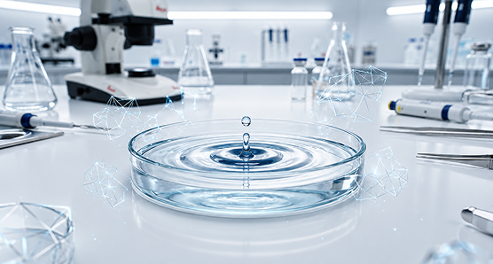

Home > 연구소이야기 > 연구성과
LAB STORY
연구성과
끊임없는 과학적 탐구와 혁신을 통해
신뢰할 수 있는 솔루션을 제공합니다.
NEOPHARM R&D
Research for Tomorrow.
피부를 향한 깊은 이해,
더 나은 내일을 위한 연구

01
피부를 이해하는 깊이
UNDERSTANDINGkeyboard_arrow_down
피부 본연의 건강함을 지키기 위해 새로운 가능성을 탐구합니다.
피부를 이해하는 깊이, 연구의 시작
네오팜은 피부 본연의 건강함을 지키기 위해 끊임없이 새로운 가능성을 탐구합니다. 피부 장벽에 대한 깊은 이해와 지속적인 연구를 바탕으로, 일상 속 피부 고민에 더 나은 해답을 제시하고자 합니다.
02
기술이 만드는 새로운 가치
INNOVATIONkeyboard_arrow_down
작은 발견을 의미 있는 변화로 연결하며 새로운 기준을 만들어갑니다.
기술의 진보가 만드는 새로운 가치
축적된 연구 경험과 독자적인 기술력을 바탕으로 피부 건강의 새로운 기준을 만들어갑니다. 작은 발견을 의미 있는 변화로 연결하며, 보다 섬세하고 효과적인 피부 솔루션을 개발하기 위해 노력합니다.
03
내일의 아름다움을 향해
FUTUREkeyboard_arrow_down
연구의 성과를 넘어 일상에 긍정적인 변화를 전합니다.
오늘의 연구가 내일의 아름다움으로
연구의 성과는 기술의 발전에 머무르지 않습니다. 네오팜은 피부를 넘어 사람의 일상에 긍정적인 변화를 전하고, 모두가 건강한 아름다움을 누릴 수 있는 미래를 향해 나아갑니다.
최신 연구 성과
-
특허 2023.11
- 독자적 세라마이드 합성 기술 특허 획득
- 피부 장벽 강화를 위한 새로운 세라마이드 복합체 합성 기술에 대한 특허를 취득하여, 민감성 피부 스킨케어 분야에서의 기술력을 입증했습니다.
-
논문 2023.08
- 아토피 피부염 완화 메커니즘 국제 학술지 게재
- 자사 개발 성분의 염증 억제 메커니즘을 규명한 연구 결과가 피부과학 분야의 저명한 SCI급 국제 학술지에 게재되었습니다.
-
특허 2023.02
- 식물 유래 진정 성분 추출 공법 특허 등록
- 고순도 활성 성분을 손실 없이 추출하는 친환경적 신공법 개발 완료 및 특허 등록.
-
수상 2023.05
- 대한민국 혁신기술대상 바이오 부문 수상
- 혁신적인 약물 전달 시스템(DDS)을 응용한 화장품 소재 개발 공로를 인정받아 2023 대한민국 혁신기술대상을 수상했습니다.
-
수상 2022.11
- 피부과학 연구대상 우수상 수상
- 피부장벽 보호 성분의 임상 효능 연구 결과를 인정받아 대한피부과학연구회가 주관하는 피부과학 연구대상에서 우수상을 수상했습니다.
-
특허 2022.11
- 고보습 세라마이드 안정화 기술 특허 등록
- 수분 손실을 최소화하는 세라마이드 안정화 제형 기술이 특허로 등록되어, 민감성 피부를 위한 차세대 보습 제품 개발의 기반을 마련했습니다.